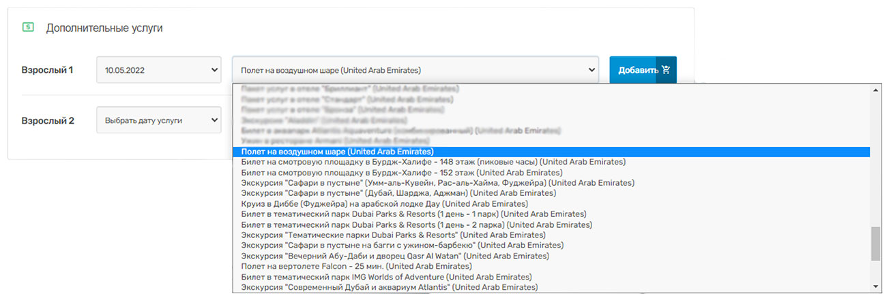

Страна–достопримечательность – так можно сказать об Объединенных Арабских Эмиратах.
Красочное государство на берегах Персидского залива привлекает внимание туристов. Роскошные фонтаны, стеклянные
небоскребы, изумительной красоты мечети и огромный горнолыжный комплекс прямо в пустыне.
Отправляйтесь в ОАЭ прямо сейчас! Здесь есть на что посмотреть!
Практически каждый турист, выбравший ОАЭ для путешествия, ищет интересные экскурсии. Отдыхающим хочется открыть для себя новые и интересные места, получить незабываемые впечатления и сделать яркие фотографии.
Мы подготовили для вас самые увлекательные экскурсии в ОАЭ!
Шаг 1. Выбор даты услуги
Выберите дату услуги в разделе дополнительных услуг при бронировании тура.
Шаг 2. Выбор дополнительной услуги
Выберите необходимый вариант пакета услуг. Затем нажмите на кнопку «Добавить».
Мир Ferrari в Абу-Даби – тематический парк Феррари с самыми разными аттракционами, пропитанный потрясающей атмосферой драйва и экстрима.
Аквапарк Yas Water World – крупнейший парк аттракционов, расположенный на острове Яс. 40 водных горок, захватывающих дух, скоростные спуски, некоторые из которых не встретишь больше нигде. Здесь есть,чем заняться, чтобы пощекотать себе нервы и наполниться настоящим адреналином!
Абу-Даби – потрясающий город, выросший посреди пустыни и поражающий гостей своей архитектурой. Отправившись на экскурсию, вначале туристы побывают в этнографической деревне, где увидят бамбуковые хижины, шатры из козьей шерсти, стоянки бедуинов, а затем посетят отель Emirates Palace и дворец президента, прогуляются вдоль набережной города, украшенной фонтанами, увидят мечеть шейха Заеда, отправятся за вкуснейшими финиками на Восточный рынок.
Есть несколько правил, касающихся одежды, которая должна соответствовать требованиям местной культуры: одежда не должна просвечивать, обувь должна быть закрытой, у женщин должны быть покрыты руки до запястья, ноги по щиколотку, голова и шея. Мужчинам следует прикрыть колени, руки ниже локтя. Несоответствие указанным нормам может оказаться плачевным – туристы не попадут в мечеть.
Ультрасовременный, изящный, почти фантастический – всё это можно сказать о Дубае! Отправившись в ОАЭ, невозможно пропустить путешествие по этому потрясающему городу.
В рамках экскурсии туристов ждут: район Дубай Марина – настоящее архитектурного достояния города; знаменитый Пальмовый остров; отель «Atlantis»; легендарный отель в форме паруса Burj Al Arab; торговый центр Dubai Mall; огромный океанариум и, конечно же, башня Burj Khalifa, с высоты которой отдыхающие смогут увидеть Дубай во всей красе, после чего отправиться на шоу танцующих фонтанов!
Экскурсия Фантастический Дубай познакомит туристов с действительно фантастическим городом, который способен поразить воображение даже самых искушенных путешественников.
Отдыхающие проплывут на арабской лодке по району Дубай Марина, полюбуются архитектурой Дубая и отелем Burj Al Arab, насладятся изысканной кухней в отеле «Armani» и потрясающим шоу фонтанов. Кроме того, туристов ждет грандиозный аквариум и зоопарк морских обитателей, а также смотровая площадка легендарного здания Burj Khalifa, откуда открывается невероятный вид на Дубай.
Экскурсия придется по душе туристам, желающим отправиться в увлекательное путешествие по крутым барханам пустыни, полюбоваться красивым закатом, насытиться позитивными эмоциями и сделать яркие фотографии!
Кроме того, пустынное сафари предоставит возможность поближе узнать культуру и наследие Арабских Эмиратов, а еще насладиться национальной кухней в чудесном ресторане прямо под открытым небом.
Парк IMG Worlds of Adventure – потрясающий мир разнообразных развлечений, расположившийся на огромной территории. Экскурсия в парк будет интересна и взрослым, и детям. Туристы повстречают здесь и легендарного Человека-паука, и Халка, и Тора, и Капитана Америка, а еще – огромных динозавров и многих других героев.
Парк разбит на несколько тематических зон, в каждой из которых отдыхающих ждет большой спектр развлечений, магазины, рестораны и невероятные аттракционы.
Dubai Parks and Resorts – крупнейший комплекс парков развлечений, в состав которого входят:
MOTIONGATE™ Dubai – тематический парк, посвященный любимым персонажам
ведущих голливудских киностудий DreamWorks Animation, Columbia Pictures, включая Smurfs, и Lionsgate.
Bollywood Parks™ Dubai – первый семейный тематический парк, аттракционы которого посвящены миру Болливуда.
LEGOLAND® Dubai – уникальный интерактивный парк для семей, в котором оживают конструкции из кирпичиков LEGO®.
LEGOLAND® Water Park – первый в регионе водный парк, предназначенный для семей с детьми от 2 до 12 лет.
Все тематические парки объединены торгово-ресторанной зоной Riverland™ Dubai с бесплатным доступом.
Лучший вариант запомнить путешествие в ОАЭ — это прокатиться на всех аттракционах в парке развлечений Dubai Parks and Resorts, а также сделать фотографии на смотровой площадке Бурдж-Халифа. В этом разделе вы сможете забронировать билеты на эти развлечения. Не пропустите!